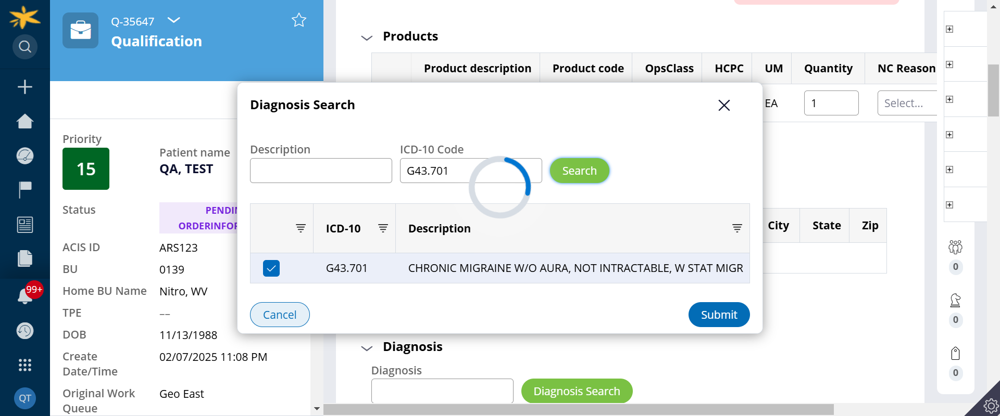

-
Creation of cases
7:05:56 PM / 00:04:12:213 Fail
Creation of cases
02.07.2025 7:05:56 PM 02.07.2025 7:10:08 PM 00:04:12:213 · #test-id=1FailSuccessful creation of Q caseGiven the user navigates to login pageWhen user enters email as "AutoTestUser" and password as "Apriajan@2025"Given I click on the "login_btn" buttonGiven user refresh page and serach elementGiven user wait for 5 secondsGiven I click on the "plusicon_btn" buttonGiven I click on the "intake_btn" buttonGiven user wait for jscript 5 secondsWhen user enters LastName as "QA"When user enters FirstName as "TEST"When user enters ZipCode as "25313"Given user wait for jscript 5 secondsWhen I retrieve the value from the pageGiven I click on the "search_btn" buttonGiven I click on the "NewPatient_chkbx" buttonWhen I select the option "New Order" from the dropdown with id "CaseType_dropdwn"Given I click on the "Submit_btn" buttonGiven user wait for jscript 5 secondsWhen I select the option "Walk-In Customer" from the dropdown with id "OrderType_dropdwn"Given user wait for 10 secondsGiven I click on the "ReferralSearch_btn" buttonWhen user enters ReferralId as "*aaa01"Given I click on the "ReferralLayoutSearch_btn" buttonGiven I click on the "ReferralLayoutRadio_btn" buttonGiven I click on the "LayoutSubmit_btn" buttonGiven user wait for 5 secondsGiven I click on the "PayorSearch_btn" buttonWhen user enters PayorName as "humana"Given I click on the "PayorLayoutSearch_btn" buttonGiven I click on the "PayorLayoutRadio_btn" buttonGiven I click on the "LayoutSubmit_btn" buttonGiven user wait for 10 secondsWhen I select the option "Cofflator" from the dropdown with id "AddProd_dropdwn"Given I click on the "AddProd_btn" buttonWhen I select the option "Accept" from the dropdown with id "Decision_dropdwn"Given user wait for 10 secondsWhen user enters DOB as "*11/13/1988"Given user wait for 10 secondsWhen user enters PrimaryPhone as "1234567890"When I select the option "Male" from the dropdown with id "Gender_dropdwn"Given user wait for 5 secondsWhen user enters OrderByName as "Test"When user enters OrderByPhoneNo as "1234567890"Given user wait for 10 secondsGiven user click on "InitialOutreachCallsRadiobtn_No" button with javascriptGiven user wait for 10 secondsGiven I click on the "Save_btn" buttonWhen I retrieve the value from the pageGiven user wait for 10 secondsGiven I click on the "Submit_btn" buttonGiven user wait for 10 secondsGiven I click on the "Submit_btn" buttonGiven user wait for 10 secondsWhen user enters ACISPatientID as "ARS123"When user enters BranchUser as "RGACIS"When user enters Intake as "11"Given I click on the "Submit_btn" buttonGiven user wait for 5 secondsGiven I click on the "CaseHirarchy_btn" buttonGiven user wait for 10 secondsGiven I click on the "Action_btn" buttonGiven user wait for 5 secondsGiven I click on the "ActionRefresh_btn" buttonGiven user wait for 5 secondsGiven I click on the "CaseHirarchy_btn" buttonGiven user wait for 5 secondsGiven I click on the "QCase_btn" buttonGiven user wait for 10 secondsWhen I retrieve the value from the pageGiven I click on the "Go_btn" buttonGiven user wait for 10 secondsGiven I click on the "Benefit_Information_btn" buttonGiven user wait for 5 secondsThen user enters Group number as "123"Then user enters InsuranceCoveragePercentage as "11"When user enters DeductibleMaxField as "11"When user enters DeductibleMetField as "11"Given user wait for 10 secondsGiven user click on Benefit Information "RelationshipToInsuredRadio_btn" button with javascriptGiven I click on the "ModalSubmit_btn" buttonGiven user wait for 5 secondsWhen I retrieve the value from the pageGiven I click on the "Submit_btn" buttonGiven user wait for 10 secondsGiven I click on the "DiagnosisSearch_btn" buttonThen user enters ICDCode as "G43.701"Given I click on the "DiagnosisLayoutSearch_btn" buttonGiven user click on Daignosis ModalSubmit "DiagnosisLayoutChkbx_btn" button with javascriptGiven user wait for 3 secondsGiven I click on the "ModalSubmit_btn" buttonstepDefinitions.Hooks.addScreenshot(io.cucumber.java.Scenario)Successful creation of Q caseGiven user wait for 10 secondsStep skippedGiven I click on the "PhysicianSearch_btn" buttonStep skippedWhen user enters PhysicianName as "DAVID"Step skippedGiven I click on the "PhysicianLayoutSearch_btn" buttonStep skippedGiven I click on the "PhysicianLayoutRadio_btn" buttonStep skippedGiven I click on the "ModalSubmit_btn" buttonStep skippedGiven user wait for 5 secondsStep skippedWhen I select the option "Continue to AQG" from the dropdown with id "CaseProcessAction_dropdwn"Step skippedGiven I click on the "Submit_btn" buttonStep skippedGiven user wait for 5 secondsStep skippedWhen user enters HCPC as "A0375"Step skippedWhen user enters If_supply_what_is_base_HCPC as "E0601"Step skippedGiven user wait for 5 secondsStep skippedWhen I select the option "Initial Rental" from the dropdown with id "IfSupplyWhatIsTheBaseHCPCStatus_dropdwn"Step skippedGiven I click on the "LaunchPayorQualification_btn" buttonStep skippedGiven user wait for 10 secondsStep skippedWhen I select the option "Changing Transaction Type" from the dropdown with id "SelectActionWillBeTakenToResolve_dropdwn"Step skippedGiven user wait for 5 secondsStep skippedGiven I click on the "FormRequirements_btn" buttonStep skippedWhen I select the option "Continue to Forms Determination" from the dropdown with id "CaseProcessAction_dropdwn"Step skippedGiven I click on the "Submit_btn" buttonStep skippedGiven user wait for 5 secondsStep skippedWhen I select the option "Requested" from the dropdown with id "Status_dropdwn"Step skippedWhen I select the option "Schedule Delivery" from the dropdown with id "CaseProcessAction_dropdwn"Step skippedGiven I click on the "Submit_btn" buttonStep skippedGiven user wait for 10 secondsStep skippedThen user should see "Thank you! The next step in this case has been routed appropriately."Step skippedGiven user wait for 5 secondsStep skipped
-
org.openqa.selenium.ElementClickInterceptedException
1 tests
org.openqa.selenium.ElementClickInterceptedException
1 failedStatus Timestamp TestName Fail 19:10:06 PM Given I click on the "ModalSubmit_btn" button Creation of cases.Successful creation of Q case.Given I click on the "ModalSubmit_btn" button
-
@regression
1 tests
@regression
1 failedStatus Timestamp TestName Fail 19:05:56 PM Successful creation of Q case Creation of cases.Successful creation of Q case -
@creationOfQCase
1 tests
@creationOfQCase
1 failedStatus Timestamp TestName Fail 19:05:56 PM Successful creation of Q case Creation of cases.Successful creation of Q case
Started
Feb 7, 2025 07:05:54 PM
Ended
Feb 7, 2025 07:10:17 PM
Features Passed
0
Features Failed
1
Features
Scenarios
Steps
Timeline
Tags
| Name | Passed | Failed | Skipped | Others | Passed % |
|---|---|---|---|---|---|
| @regression | 0 | 1 | 0 | 0 | 0% |
| @creationOfQCase | 0 | 1 | 0 | 0 | 0% |